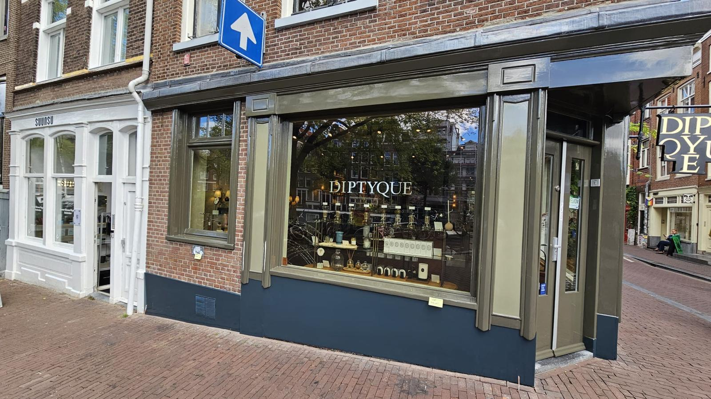
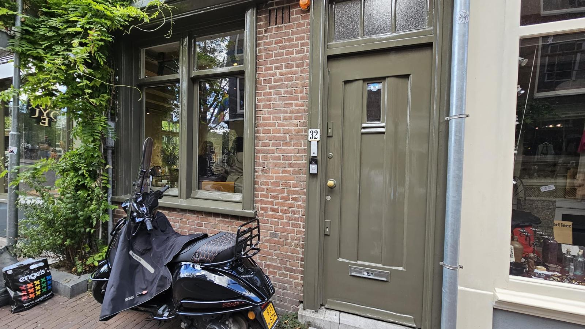
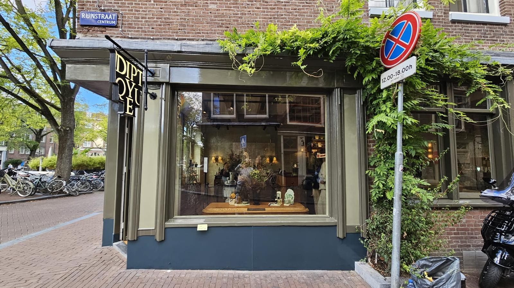
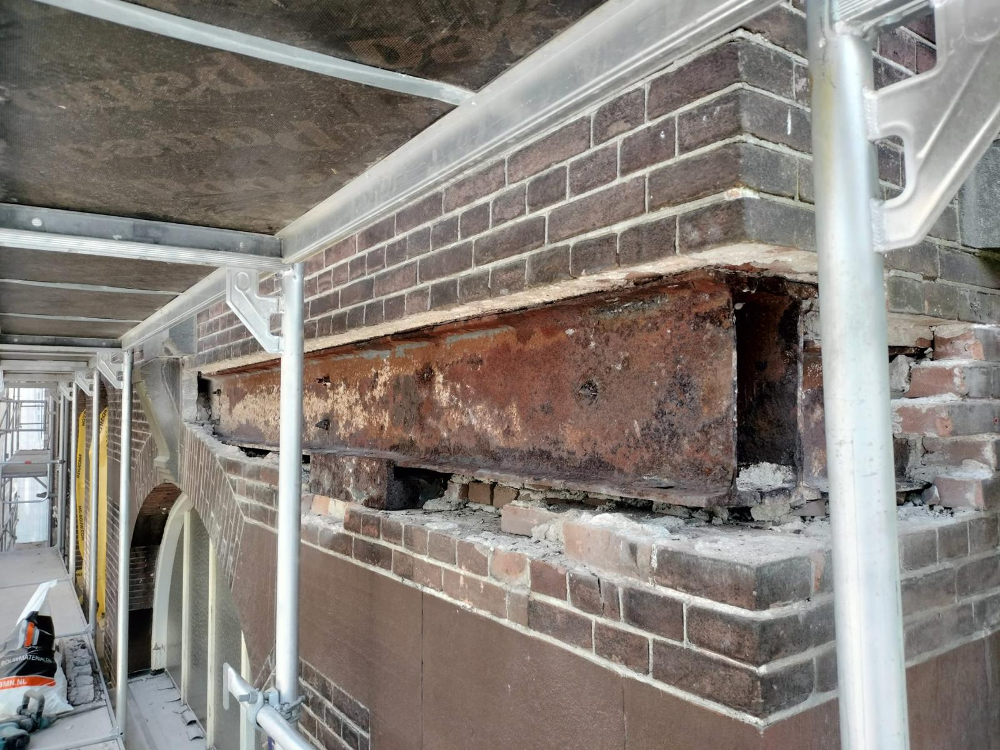
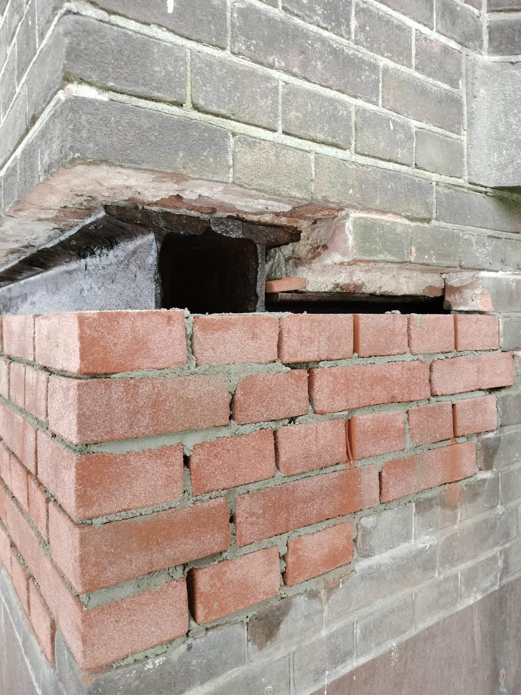
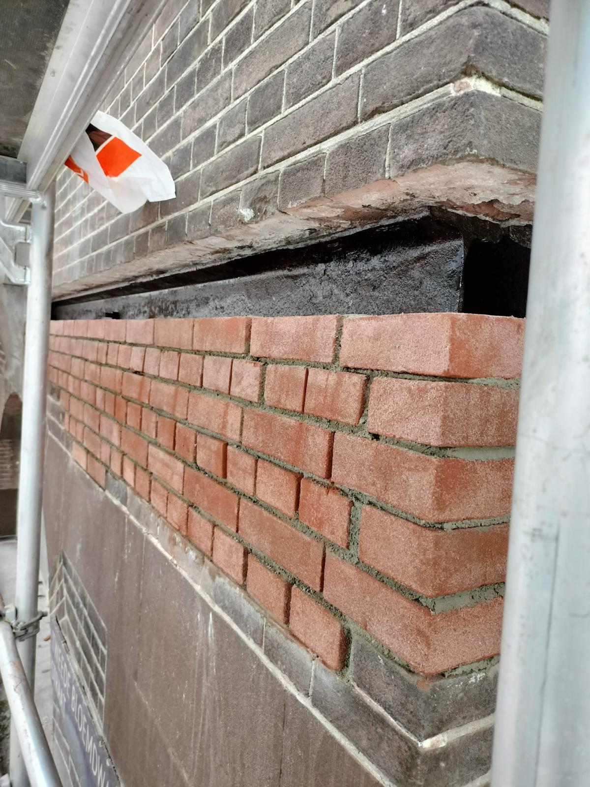
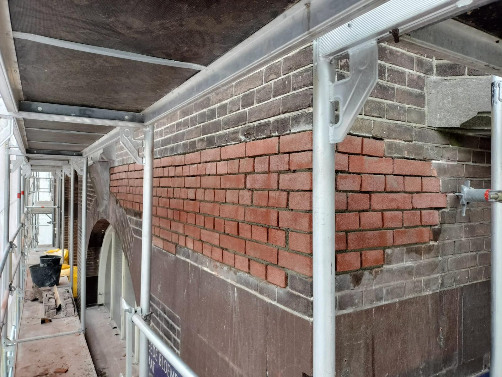

Onze Projecten
Vakmanschap in verf en hout








Hoogwaardig schilderwerk en specialistisch herstel van houten balken. Wij beschermen uw pand tegen de elementen en herstellen de originele grandeur.
Goed schilderwerk is veel meer dan alleen een mooie kleur; het is de eerste verdedigingslinie van uw pand tegen vocht en houtrot. Gecombineerd met onze expertise in balkherstel, zorgen wij ervoor dat de constructie niet alleen prachtig oogt, maar ook decennialang veilig blijft.
Vakmanschap in verf en hout






